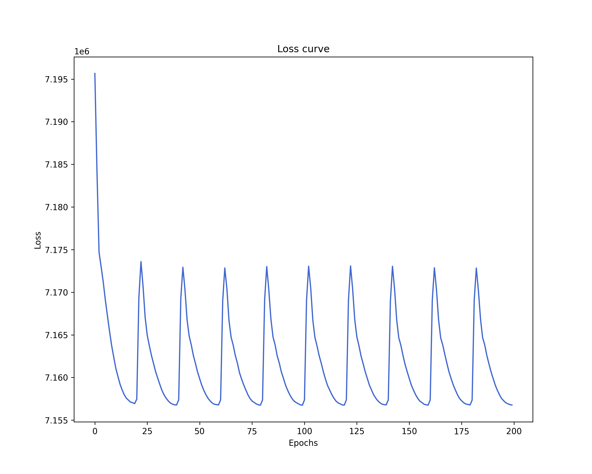
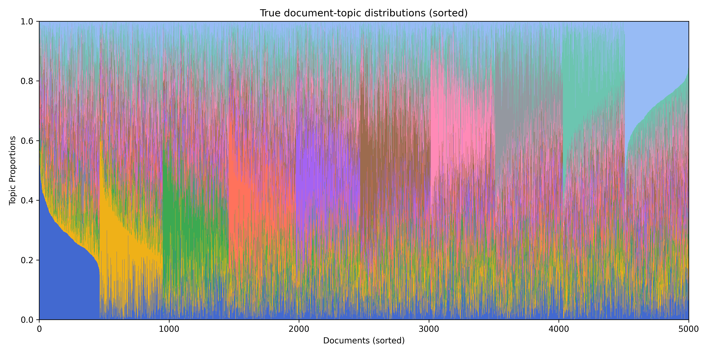
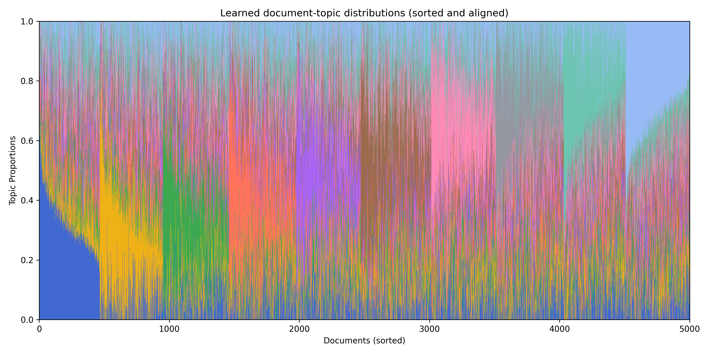
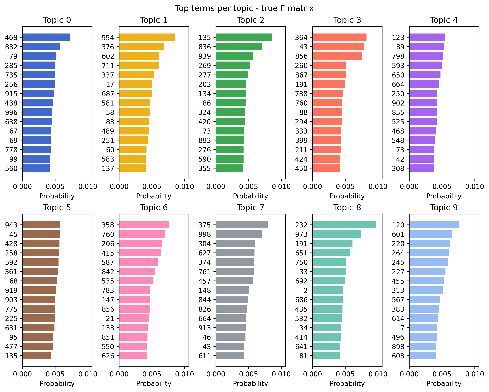
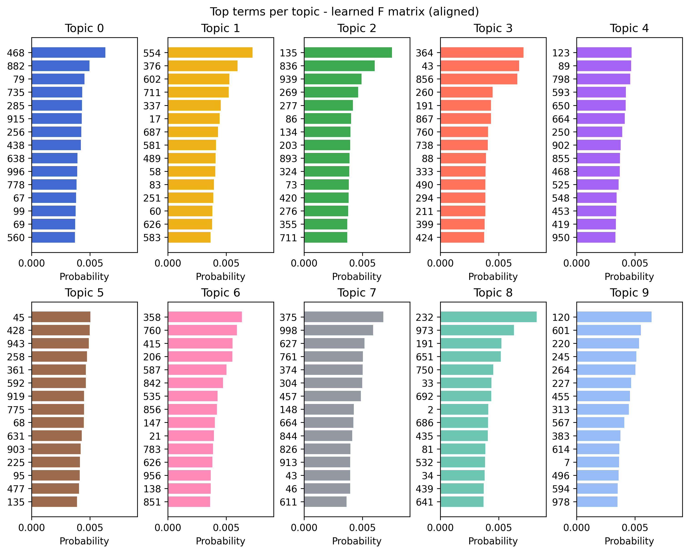

Get started¶
Let’s walk through a canonical tinytopics workflow using a synthetic dataset.
Import tinytopics¶
Generate synthetic data¶
Set random seed for reproducibility:
Generate a synthetic dataset:
n, m, k = 5000, 1000, 10
X, true_L, true_F = tt.generate_synthetic_data(n, m, k, avg_doc_length=256 * 256)
Fit topic model¶
Fit the topic model and plot the loss curve. There will be a progress bar.

Tip
By default, tinytopics uses AdamW with weight decay as the optimizer, and the cosine annealing with warm restarts scheduler. This combination should help reduce the need of extensive manual tuning of hyperparameters such as the learning rate. For optimal performance, exploring the possible tuning parameter space is still recommended.
Post-process results¶
Get the learned L and F matrices from the fitted topic model:
To make it easier to inspect the results visually, we should try to “align” the learned topics with the ground truth topics by their terms similarity.
aligned_indices = tt.align_topics(true_F, learned_F)
learned_F_aligned = learned_F[aligned_indices]
learned_L_aligned = learned_L[:, aligned_indices]
Sort the documents in both the true document-topic matrix and the learned document-topic matrix, grouped by dominant topics.
sorted_indices = tt.sort_documents(true_L)
true_L_sorted = true_L[sorted_indices]
learned_L_sorted = learned_L_aligned[sorted_indices]
Note
The alignment step mostly only applies to simulation studies because we often don't know the ground truth L and F for real datasets.
Visualize results¶
We can use a “Structure plot” to visualize and compare the document-topic distributions.
tt.plot_structure(
true_L_sorted,
normalize_rows=True,
title="True document-topic distributions (sorted)",
output_file="L-true.png",
)

tt.plot_structure(
learned_L_sorted,
normalize_rows=True,
title="Learned document-topic distributions (sorted and aligned)",
output_file="L-learned.png",
)

We can also plot the top terms for each topic using bar charts.
tt.plot_top_terms(
true_F,
n_top_terms=15,
title="Top terms per topic - true F matrix",
output_file="F-top-terms-true.png",
)

tt.plot_top_terms(
learned_F_aligned,
n_top_terms=15,
title="Top terms per topic - learned F matrix (aligned)",
output_file="F-top-terms-learned.png",
)
